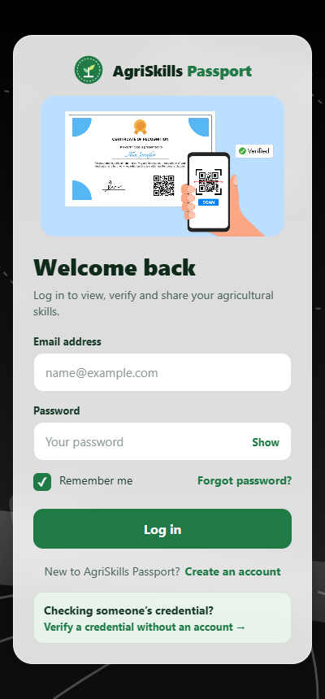
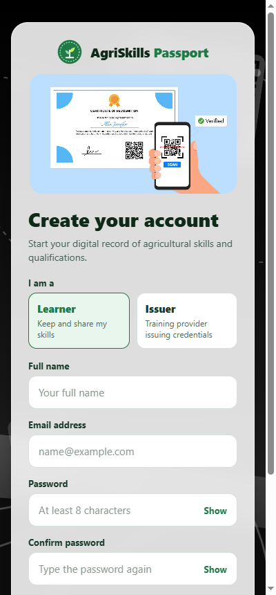
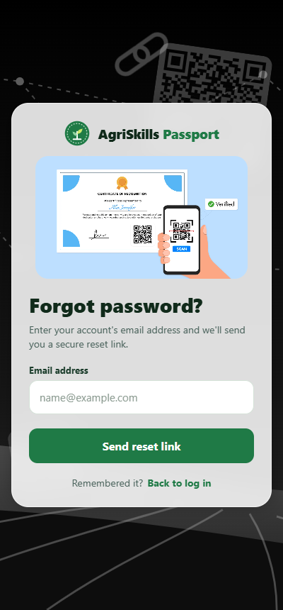
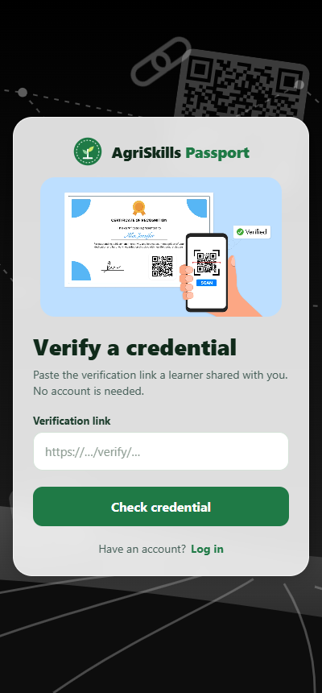
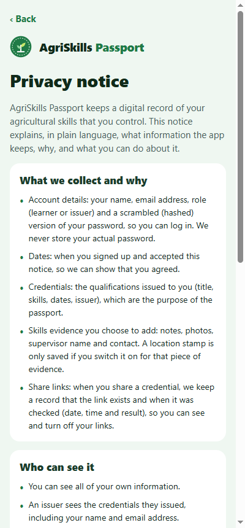

A learner-controlled digital record of agricultural skills and qualifications. Credentials are issued by vetted trainers, kept by the learner and verified by employers in seconds.
LearnersIssuersAdminsEmployers
Farm workers learn on the job and on short courses. Paper certificates get lost, damaged or forged, and skills learned in the field often have no record at all. Employers have no quick way to check what is true.
Certificates are kept in folders, cars and sheds. One flood or move and the proof is gone.
A scanned or printed certificate can be edited. Employers must phone the trainer to check it.
Years of irrigation, spraying or livestock work leave no formal trace, so experience goes unrecognised.
An approved training provider issues it to the learner's email.
Stored in their passport, shared with a QR code or link they control.
Opens the link, sees whether it is genuine, current and unrevoked.
The next slides go screen by screen. Each button is shown with what it does and why it is there. The button styles below match the app.
| Style | Meaning |
|---|---|
| Primary action | The main thing to do on that screen (log in, save, issue). |
| Secondary action | A helpful extra option (copy link, choose a photo). |
| Text link | Moves to another screen (forgot password, create an account). |
| Choice / tab | Picks one option from a set (role, expiry, tab). |
| Careful action | Deletes, revokes or turns something off. Most need a second tap to confirm. |
| Field / switch | Something you type into, tick or switch on. |
The front door for learners, issuers and admins. The app sends each person to their own area based on their role.
| Button | What it does & why |
|---|---|
| Email · Password | Sign-in fields. Pressing Enter in the email field jumps to the password field, which is faster on a phone. |
| Show | Shows or hides the password. Fewer typing mistakes on small keyboards. |
| ☑ Remember me | Stays logged in for 7 days, using the phone's secure storage. Untick on shared computers. |
| Forgot password? | Opens the email reset flow. |
| Log in | Signs in. Blocked for 15 minutes after 10 failed tries, which stops password guessing. |
| Create an account | Opens sign-up. |
| Verify a credential → | For employers. Checks a shared link without any account. |

One sign-up form for both learners and training providers.
| Button | What it does & why |
|---|---|
| Learner Issuer | Chooses your role. The name field changes to "Organisation or trainer name" when Issuer is chosen. |
| Full name · Email | Who you are. Issuers send credentials to this email address. |
| Password · Confirm Show | At least 8 characters, with a live strength meter. Confirming catches typing mistakes. |
| ☑ Privacy notice | Must be ticked to continue. The link opens the full notice. Consent comes first. |
| Create account | Creates the account and logs you straight in. |
| Log in | Back to log in if you already have an account. |

A three-step reset: ask for a link, set a new password, done.
| Button | What it does & why |
|---|---|
| Email address | The account to reset. |
| Send reset link | Emails a one-time link that expires after 15 minutes. The reply looks the same whether or not the email has an account, so nobody can use it to find out who is registered. |
| New · Confirm password | Shown when you open the link from the email. |
| Change password | Saves the new password. The link then stops working. |
| Back to log in Back to log in | Returns to log in after sending the link, after finishing, or if you remember your password. |

An employer pastes the link a learner shared, or simply scans the QR code with a phone camera.
| Button | What it does & why |
|---|---|
| Verification link | Paste the …/verify/… link here. |
| Check credential | Checks the link, then the digital signature, then whether the credential is revoked or expired. |
| Log in | For visitors who do have an account. |
Holder, issuer, issue date, expiry date, skills and public reference.
A link that was turned off or has expired reveals no details at all. It just says the link no longer works.

A plain-language page explaining what is collected, why, and who can see it. It opens from the sign-up checkbox.
| Button | What it does & why |
|---|---|
| ‹ Back | Returns to the screen you came from, so anything you already typed in sign-up is kept. |
Nothing is public by default. Only the learner can create a share link, and only they can turn it off.
Location and photos are only collected when the learner chooses to add them.
After logging in, learners get five tabs at the bottom of the screen:
| Logout | Signs out and clears the saved login. |
| Credentials · Verified | Summary counts at a glance. |
| Achievement card | Each recent credential. Tap to open its details. |
| Credential card | Shows the title, issuer, status and public reference. Tap to open. |
| Details page | Shows the issuer, category, issue and expiry dates, reference, description and skills. Read only, so learners can't edit what an issuer signed. |
For skills learned on the job (Recognition of Prior Learning, or RPL). Learners record what they did, with optional photo, location and supervisor.
| + Add evidence | Opens the form. |
| Evidence card | Shows the skill and its review status. Tap to open it. |
| Skill · What did you do? | Both are required. |
| Take photo From gallery | Adds a photo of the work (called "Choose photo" on web). Remove photo undoes it. |
| Location stamp switch | Records where the work was done. Location is only asked for when switched on. |
| Supervisor name · contact | A witness who can confirm the work. |
| Save evidence | Saves the evidence and uploads the photo privately. |
| ‹ All evidence | Back to the list. |
| Delete evidence | First tap changes it to "Tap again to delete permanently". The second tap deletes the evidence and its photo. |
| Cancel | Backs out of the delete. |
The learner decides who sees which credential, and for how long.
| Button | What it does & why |
|---|---|
| Qualification card | Chooses which credential to share. Only active credentials can be shared. Expired or revoked ones stay in the passport as a record. |
| 7 30 90 days | How long the link works. |
| Create verification link | Creates a QR code and a private link. |
| Share link | Opens the phone's share menu (WhatsApp, email, SMS). |
| Copy link | Copies the link. The button changes to "Link copied". |
| Turn off | Stops one active link straight away. |
Shown before sharing, so the learner knows exactly what is revealed.
The server keeps only a scrambled copy (a SHA-256 hash) of the link's code, so even a database leak can't be used to rebuild working links.
A link that was turned off or has expired shows no credential details. It just says the link no longer works.
Issuers get four tabs:
| Learner email | The learner's registered email address. |
| Title · Category · Description | What the qualification is. |
| Issue date · Expiry | Dates in YYYY-MM-DD format. Expiry is optional. |
| Skills · Evidence note | Skills separated by commas, plus an optional note. |
| Issue credential | Signs the credential and adds it to the learner's passport. Greyed out until an admin approves the issuer. |
| Logout | Signs out (on the Dashboard). |
| Issued · Active | Summary counts and the latest credentials. |
| Revoke credential | Cancels a credential, for example if it was issued by mistake. Employers will then see it as revoked. |
| Log out | On the Profile tab. |
Admins check that an issuer is a genuine training provider (for example, accredited by AgriSETA or the QCTO) before it can issue anything.
| Button | What it does & why |
|---|---|
| Pending (n) Approved (n) | Two tabs, each with a live count. |
| Approve | Lets the issuer start issuing. The app records which admin approved it. |
| Decline | First tap changes it to "Tap again to decline". Declining removes an account that hasn't issued anything. |
| Withdraw approval | On the Approved tab, also needs two taps. Stops future issuing. Credentials already issued stay valid, so learners aren't punished. |
| Cancel | Backs out of a decline or withdraw. |
| Pull to refresh | Reloads the lists. |
| Logout | Signs out. |
Designed around farm work and training providers, with RPL evidence from the field and not just certificates.
Credentials follow the person, not the employer. Only the learner shares them, and only the learner can stop sharing.
Every credential is signed (HMAC-SHA256). Change one field and verification fails.
Employers scan a QR code. No sign-up, no phone calls to the trainer.
Photo, optional location stamp and supervisor details. Learners can't confirm their own evidence.
Admins approve every training provider before it can issue anything, which keeps out "certificate mills".
Choose 7, 30 or 90 days. Links are stored scrambled (hashed), and dead links show nothing.
Location is opt-in, photos are private with links that expire after 10 minutes, and two taps are needed for anything permanent.
| Paper / scanned certificate | AgriSkills Passport | |
|---|---|---|
| Can it be lost? | Yes, through fire, flood or a house move | No. It's stored securely and opens on any phone |
| Can it be faked? | Easily edited | A digital signature exposes any change |
| Checking it | Phone or email the trainer and wait days | Scan a QR code and get an answer in seconds |
| Revoked qualifications | The paper still looks valid | Shows as revoked straight away |
| Who controls sharing? | Whoever has a copy | The learner, with expiry and an off switch |
| Skills learned on the job | No record | Evidence with photo, location and supervisor |
| Trust in the issuer | Unknown | Issuers must be approved by an admin |
Issuers sign it, learners own it, employers verify it in seconds. Runs on Android, iPhone and the web.